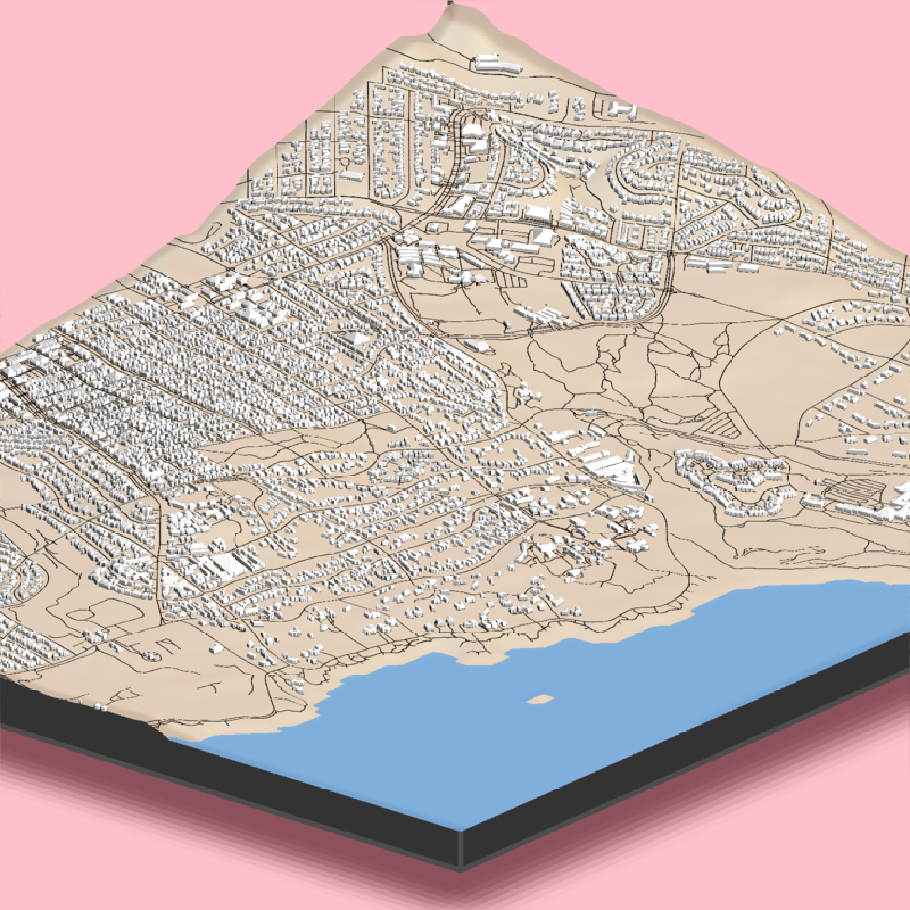

Adds 3D polygons with roofs to the current scene, using latitude/longitude or coordinates in the reference system defined by the extent object.
render_buildings(
polygon,
extent,
material = "grey",
roof_material = NA,
angle = 45,
zscale = 1,
scale_data = 1,
relative_heights = TRUE,
heights_relative_to_centroid = FALSE,
roof_height = 1,
base_height = 0,
data_column_top = NULL,
data_column_bottom = NULL,
heightmap = NULL,
holes = 0,
alpha = 1,
lit = TRUE,
flat_shading = FALSE,
light_altitude = c(45, 30),
light_direction = c(315, 225),
light_intensity = 1,
light_relative = FALSE,
clear_previous = FALSE,
...
)Arguments
- polygon
`sf` object, "SpatialPolygon" `sp` object, or xy coordinates of polygon represented in a way that can be processed by `xy.coords()`. If xy-coordinate based polygons are open, they will be closed by adding an edge from the last point to the first.
- extent
Either an object representing the spatial extent of the 3D scene (either from the `raster`, `terra`, `sf`, or `sp` packages), a length-4 numeric vector specifying `c("xmin", "xmax", "ymin", "ymax")`, or the spatial object (from the previously aforementioned packages) which will be automatically converted to an extent object.
- material
Default `"grey80"`. If a color string, this will specify the color of the sides/base of the building Alternatively (for more customization), this can be a r`ayvertex::material_list()` object to specify the full color/appearance/material options for the resulting `ray_mesh` mesh.
- roof_material
Default `NA`, defaults to the material specified in `material`. If a color string, this will specify the color of the roof of the building. Alternatively (for more customization), this can be a `rayvertex::material_list()` object to specify the full color/appearance/material options for the resulting `ray_mesh` mesh.
- angle
Default `45`. Angle of the roof.
- zscale
Default `1`. The ratio between the x and y spacing (which are assumed to be equal) and the z axis in the original heightmap.
- scale_data
Default `1`. How much to scale the `top`/`bottom` value when rendering. Use `zscale` to adjust the data to account for `x`/`y` grid spacing, and this argument to scale the data for visualization.
- relative_heights
Default `TRUE`. Whether the heights specified in `roof_height` and `base_height` should be measured relative to the underlying heightmap.
- heights_relative_to_centroid
Default `FALSE`. Whether the heights should be measured in absolute terms, or relative to the centroid of the polygon.
- roof_height
Default `1`. Height from the base of the building to the start of the roof.
- base_height
Default `0`. Height of the base of the roof.
- data_column_top
Default `NULL`. A string indicating the column in the `sf` object to use to specify the top of the extruded polygon.
- data_column_bottom
Default `NULL`. A string indicating the column in the `sf` object to use to specify the bottom of the extruded polygon.
- heightmap
Default `NULL`. Automatically extracted from the rgl window--only use if auto-extraction of matrix extent isn't working. A two-dimensional matrix, where each entry in the matrix is the elevation at that point. All points are assumed to be evenly spaced.
- holes
Default `0`. If passing in a polygon directly, this specifies which index represents the holes in the polygon. See the `earcut` function in the `decido` package for more information.
- alpha
Default `1`. Transparency of the polygons.
- lit
Default `TRUE`. Whether to light the polygons.
- flat_shading
Default `FALSE`. Set to `TRUE` to have nicer shading on the 3D polygons. This comes with the slight penalty of increasing the memory use of the scene due to vertex duplication. This will not affect software or high quality renders.
- light_altitude
Default `c(45, 30)`. Degree(s) from the horizon from which to light the polygons.
- light_direction
Default `c(315, 225)`. Degree(s) from north from which to light the polygons.
- light_intensity
Default `1`. Intensity of the specular highlight on the polygons.
- light_relative
Default `FALSE`. Whether the light direction should be taken relative to the camera, or absolute.
- clear_previous
Default `FALSE`. If `TRUE`, it will clear all existing polygons.
- ...
Additional arguments to pass to `rgl::triangles3d()`.
Examples
if(run_documentation()) {
# Load and visualize building footprints from Open Street Map
library(osmdata)
library(sf)
library(raster)
osm_bbox = c(-121.9472, 36.6019, -121.9179, 36.6385)
#Get buildings from OpenStreetMap
opq(osm_bbox) |>
add_osm_feature("building") |>
osmdata_sf() ->
osm_data
#Get roads from OpenStreetMap
opq(osm_bbox) |>
add_osm_feature("highway") |>
osmdata_sf() ->
osm_road
#Get extent
building_polys = osm_data$osm_polygons
osm_dem = elevatr::get_elev_raster(building_polys, z = 11, clip = "bbox")
e = extent(building_polys)
# Crop DEM, but note that the cropped DEM will have an extent slightly different than what's
# specified in `e`. Save that new extent to `new_e`.
osm_dem |>
crop(e) |>
extent() ->
new_e
osm_dem |>
crop(e) |>
raster_to_matrix() ->
osm_mat
#Visualize areas less than one meter as water (approximate tidal range)
osm_mat[osm_mat <= 1] = -2
osm_mat %>%
rayimage::render_resized(mag=4) |>
sphere_shade(texture = "desert") |>
add_overlay(generate_polygon_overlay(building_polys, extent = new_e,
heightmap = osm_mat,
linewidth = 6,
resolution_multiply = 50), rescale_original = TRUE) |>
add_overlay(generate_line_overlay(osm_road$osm_lines, extent = new_e,
heightmap = osm_mat,
linewidth = 6,
resolution_multiply = 50), rescale_original = TRUE) |>
plot_3d(osm_mat, water = TRUE, windowsize = 800, watercolor = "dodgerblue",
zscale = 10,
background = "pink")
#Render buildings
render_buildings(building_polys, flat_shading = TRUE,
angle = 30 , heightmap = osm_mat,
material = "white", roof_material = "white",
extent = new_e, roof_height = 3, base_height = 0,
zscale=10)
render_camera(theta=220, phi=22, zoom=0.45, fov=0)
render_snapshot()
}
#> Data (c) OpenStreetMap contributors, ODbL 1.0. https://www.openstreetmap.org/copyright
#> Linking to GEOS 3.11.0, GDAL 3.5.3, PROJ 9.1.0; sf_use_s2() is FALSE
#> Loading required package: sp
#> Mosaicing & Projecting
#> Clipping DEM to bbox
#> Note: Elevation units are in meters.

if(run_documentation()) {
#Zoom in to show roof details and render with render_highquality()
render_camera(fov=110)
render_highquality(camera_location = c(18.22, 0.57, -50.83),
camera_lookat = c(20.88, -2.83, -38.87),
focal_distance = 13,
lightdirection = 45)
}